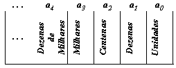
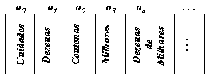

1235 = 5321?
Robson Silva de Sousa
Alguma vez você se perguntou por que a representação 1235 representa uma quantidade diferente da representação 5321? Neste texto iremos apresentar o porquê de uma mera mudança na posição da escrita dos algarismos gerar uma nova representação.
Apesar deste assunto ser visto no ensino regular, muitos não o percebem, quase sempre por causa da abordagem tradicionalista dos professores, que por sua vez possuem um tempo em sala de aula muito restrito para se estenderem nos conteúdos de uma série.
A justificativa encontra-se no nosso sistema de escrita numérica (sistema indo-arábico), pois ele é posicional e aditivo. Isto quer dizer que a posição em que o algarismo é escrito dentro do símbolo (número) influencia o seu valor e que, para saber a quantidade que o símbolo (número) representa, precisamos adicionar esses valores. Com este princípio, podemos escrever a simbologia de qualquer quantidade utilizando apenas os dez seguintes algarismos: {0, 1, 2, 3, 4, 5, 6, 7, 8, 9}
Clique aqui e veja o significado de cada símbolo.
Escrevendo o símbolo(número) da direita para a esquerda(modo convencional de escrita dos números), as posições são qualificadas como descrito abaixo.

Onde:
"... , a4, a3, a2, a1, a0" são elementos do conjunto {0, 1, 2, 3, 4, 5, 6, 7, 8, 9}, por exemplo: a0=2, a1=5, a2=9 etc.
As posições:
"Unidades" representam elementos individualmente (Exemplos: 1 lápis, 2 lápis).
"Dezenas" são grupos de dez unidades (Exemplos: 1 dezena de lápis = 10 lápis; 2 dezenas de lápis = 2 grupos de 10 lápis = 20 lápis).
"Centenas" são grupos de dez dezenas.
"Milhares" são grupos de dez centenas.
"Dezenas de milhares" são grupos de dez unidades de milhares.
ou seja, cada posição a esquerda vale dez vezes mais que a posição imediatamente a direita.
Então para sabermos a quantidade que o símbolo 1235 representa, basta que façamos seguinte interpretação:
1235 possui:
5 unidades
3 dezenas = 3 x 1 dezena = 3 x dez unidades = trinta unidades
2 centenas = 2 x 1 centena = 2 x dez dezenas = 2 x dez x 1 dezena = 2 x dez x dez unidades = duzentas unidades
1 milhar = dez centenas = dez x 1 centena = dez x dez dezenas = dez x dez x 1 dezena = dez x dez x dez unidades = um milhar de unidades (ou simplesmente: mil unidades).
Mil unidades + duzentas unidades + trinta unidades + 5 unidades = Mil duzentos e trinta e cinco unidades.
Agora considere a situação em que os valores posicionais anteriormente citados fossem organizados da esquerda para a direita:

Então o símbolo 5321 indicaria:
5 unidades
3 dezenas = 3 x 1 dezena = 3 x dez unidades = trinta unidades
2 centenas = 2 x 1 centena = 2 x dez dezenas = 2 x dez x 1 dezena = 2 x dez x dez unidades = duzentas unidades
1 milhar = dez centenas = dez x 1 centena = dez x dez dezenas = dez x dez x 1 dezena = dez x dez x dez unidades = um milhar de unidades (ou simplesmente: mil unidades).
5 unidades + trinta unidades + duzentas unidades + mil unidades = Mil duzentos e trinta e cinco unidades.
Conclusão: Os símbolos 1235 e 5321 estão indicando a mesma quantidade, pois o valor relativo à posição de cada símbolo não foi alterado(apenas alteramos a sua posição na escrita) e conservamos o princípio aditivo.
Clique aqui para saber mais.